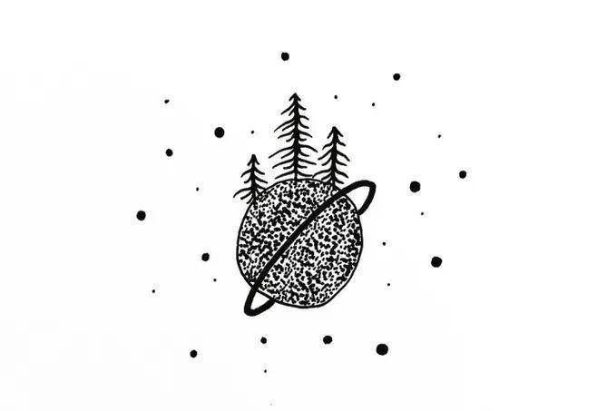
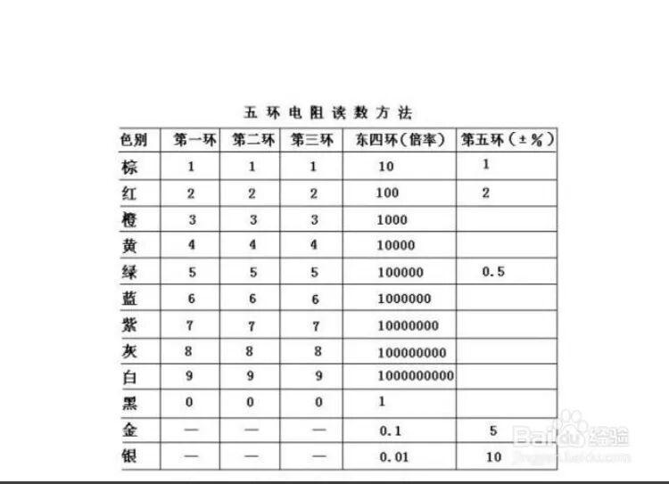
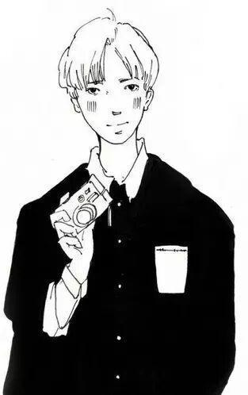

关于电阻
震惊！！！小小电阻竟然有这么大的讲究。接下来仍我们一探究竟。
向下看！！


输入标题
输入标题
电阻（Resistance，通常用“R”表示），是一个物理量，在物理学中表示导体对电流阻碍作用的大小。导体的电阻越大，表示导体对电流的阻碍作用越大。不同的导体，电阻一般不同，电阻是导体本身的一种特性。电阻将会导致电子流通量的变化，电阻越小，电子流通量越大，反之亦然。而超导体则没有电阻。

标准电阻的主要作用是发热，跟其它元件并联时，电阻可以分流。跟其它元件串联时，电阻可以分压。另外，电阻元件还包括半导体材料制成的电阻。它们的阻值会随着外界条件的变化而变化


输入标题
输入标题

输入标题
输入标题

硫化镉等材质，阻值随着光线的强弱而发生变化的电阻器。分为可见光光敏电阻、红外光光敏电阻、紫外光光敏电阻。选用时先确定电路的光谱特性。


色环电阻分为五环和四环，有四种颜色的为四环电阻，五种颜色标在电阻体上的为五环电阻，下来我们来看下认识下五环电阻的表格，大家一定要熟记这个表格哦！
表格在下面哦！！！


输入标题
输入标题

输入标题
输入标题




电阻图片
<< 滑动查看下一张图片 >>
编辑：杜遇涵
图片：网 络
文字：网 络